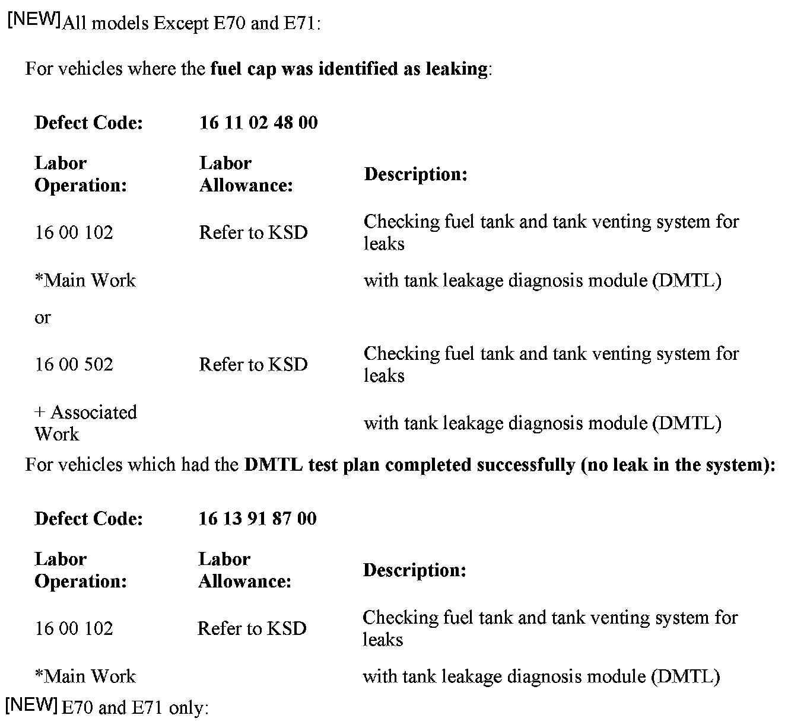
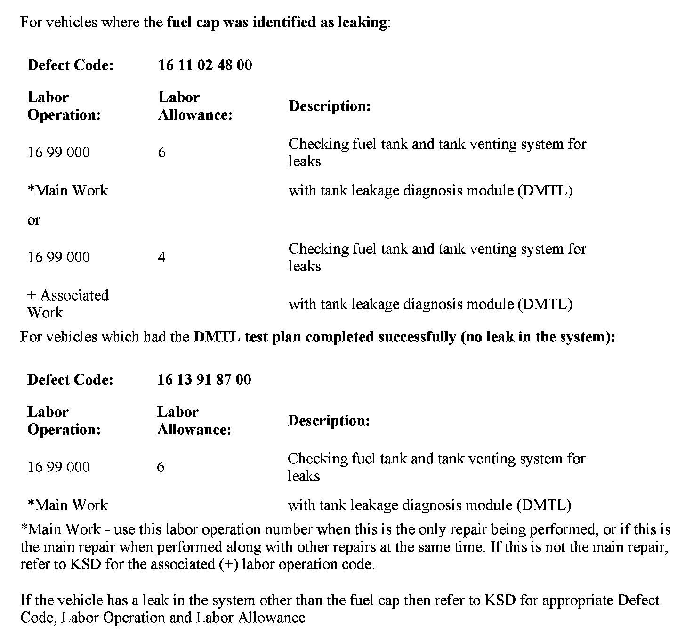

Fuel System - MIL/Check Gas Cap Lamp ON
SI B 12 02 09Engine Electrical Systems
May 2009
Technical Service
This Service Information bulletin supersedes SI B12 02 09 dated February 2009.
[NEW] designates changes to this revision
SUBJECT
Service Engine Soon or Check Gas Cap Warning Is Illuminated: Tank Leakage
MODEL
E39 (5 Series) all models produced from 9/2000 to 9/2003
E46 (3 Series) all models produced from 3/2000 to 9/2006
E52 (Z8) all production
E53 (X5) all models produced from 11/1999 to 9/2006
E60 and E61 (5 Series) all models produced from start of production to 9/30/2008
E63 and E64 (6 Series) all models produced from start of production to 9/30/2008
E65 and E66 (7 Series) all models produced from start of production to 9/30/2008
E70 (X5) all models produced from start of production to 9/30/2008
E71 (X6) all models produced from start of production to 9/30/2008
E82 and E88 (1 Series) all models produced from start of production to 9/30/2008
E83 (X3) all models produced from start of production to 9/30/2008
E85 and E86 (Z4) all models produced from start of production to 9/30/2008
E90, E91, E92 and E93 (3 Series) all models produced from start of production to 9/30/2008
SITUATION
The Service Engine Soon lamp or the Check Gas Cap warnings are illuminated while driving. When diagnosed, the DME has stored faults for a small leak, micro leak, super fine leak, or large leak in relation to the tank ventilation or evaporative system.
CAUSE
Leakage is detected in the tank ventilation or evaporative system.
PROCEDURE
1. Run the Tank Leakage (DMTL) test plan, using the current diagnostic device loaded with the latest software. If a leak has been detected, remove the fuel cap and inspect for damage, i.e., the seal is torn; the seal is worn; or the seal is curling. If any damage is detected, replace the fuel cap and run the Tank Leakage (DMTL) test plan again, to check repair effectiveness.
2. If no damage has been detected, reinstall the cap and run the DMTL test plan again.
3. If the system is now leak-proof, the customer may have incorrectly installed the fuel cap. No further action is necessary. Advise the customer that after refueling, the cap must be fitted tightly until a click is heard.
4. If the system continues to leak, refer to SI B16 01 07 for detailed leak diagnosis procedures; replace any parts that were identified as leaking.


WARRANTY INFORMATION
Covered under the terms of the BMW New Vehicle Limited Warranty or the Certified Pre-Owned program for procedures 1, 2 and 4 only.

Disclaimer